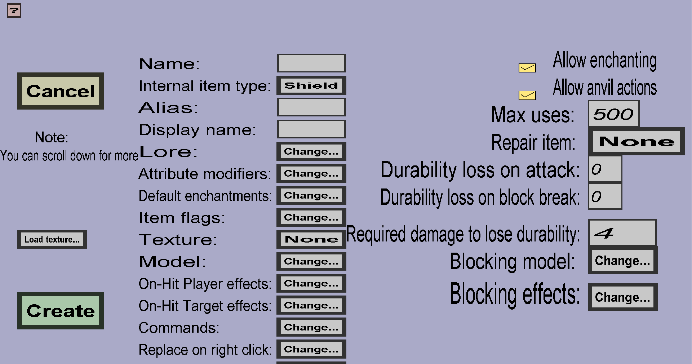

The shield edit menu can be used to modify or create custom shields. If you just started creating a new shield, it should look like this:
This menu has everything the tool edit menu has, but a little more.
Contrary to most other tools, custom shields have 2 item models: the base model and the blocking model. The blocking model will be used while players are right-clicking with the shield in hand. The base model will be used whenever the blocking model is not used.
You don't have to write any of those item models yourself, you can use my default models if you don't want to write your own. I tried to make the default models look the same as the standard minecraft model, but there are small differences if you compare them very closely. When you use the default models, you should take the following texture as example:

If you use that texture, your custom shield will have (almost) the same shape as a normal shield. You are free to make your own shape of course. To download that texture, right-click on it and use something like 'Save image as' (exact text depends on your browser). Contrary to normal shields, custom shields can't have patterns: they will simply take on the texture you give them.
When players use shields to block damage, the shield will lose durability if the damage of the blocked attack was high enough (at least 2 hearts for normal shields). The amount of durability the shield will lose is then (damage in half hearts) + 1. For custom shields, that minimum required damage is the 'Required damage to lose durability'. For any blocked attack that would have dealt at least that damage, the custom shield will lose durability like a normal shield. If the damage of the blocked attack would have been lower, the shield won't lose any durability. The 'Required damage to lose durability' must be given in half hearts, so keeping the value 4 will cause the custom shield to lose durability when the damage of attacks was at least 2 hearts (which are 4 half hearts).
Blocking effects can be used to configure special effects that will happen when a player blocks an attack using this custom shield. Examples of special effects are knockback/knock-up, potion effects, and setting the target (or attacker) on fire. See this page for more information.